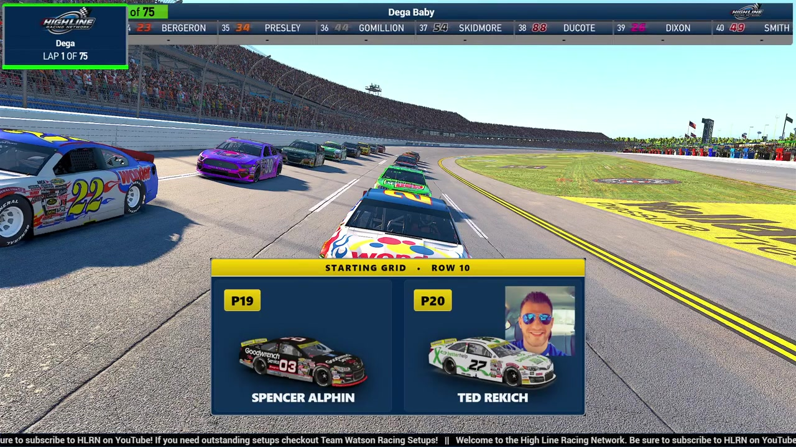

Ted Rakeese
Team assignment not stated in the structured owner record.
AN OFFICIAL-TAPE FOOTPRINT, NOT A RESULTS CLAIM
- Official files
- 1
- Central editions
- 0
- Exact tape cues
- 1
- Accepted podiums
- 0
Ted Rakeese appears in 1 official HLRN broadcast file across Season 1. The current result ledger does not assign this driver a supported top-three finish. A consistently stated team affiliation remains open for owner review. The currently indexed source window runs from November 17, 2025 through March 7, 2026.
The primary chapter index supplies 1 direct jump point. No repeat track fingerprint is yet supported. The densest direct-tape categories are incident (1 cue). Those counts describe where the name is easiest to find; they are not fault, pace, or performance grades. A source-attributed car frame is published with its original video and timestamp. That is the current discovery map for Ted Rakeese.
Official name signals are used for discovery only. They do not become starts, points, incident counts, or an ability grade. This page is deliberately detailed about the tape and restrained about the unavailable competition record. Separately, 1 Highline Live file sits on the bonus shelf and never enters the official season ledger. The displayed name is labeled broadcast grid confirmed; that status remains visible so an owner roster can strengthen or correct the identity without rewriting the evidence trail. Those boundaries define Ted Rakeese's public HLRN file.
1 featured race-tape cues
These are discovery routes into complete HLRN broadcasts, not performance grades or inferred results.
Verified team history is not consistently stated. No position-specific top-three result is currently accepted. The public spelling has broadcast identity support; an owner roster can still add legal-name, number, and team-history detail.